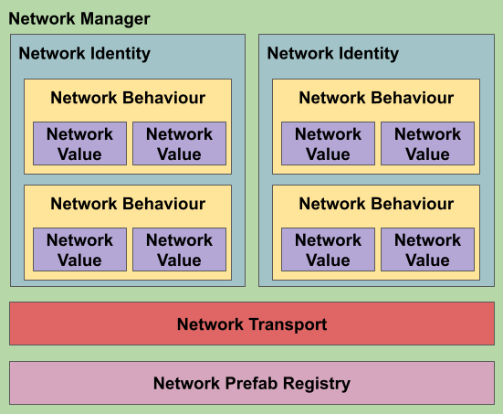
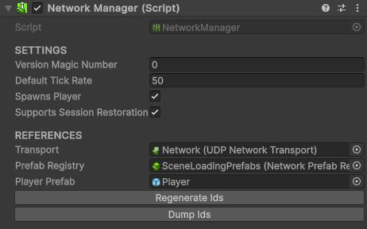
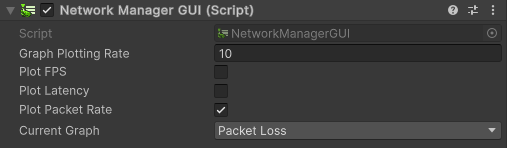
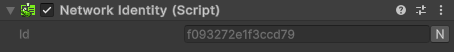
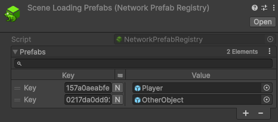
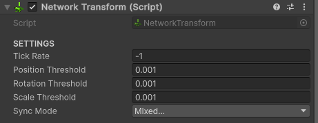
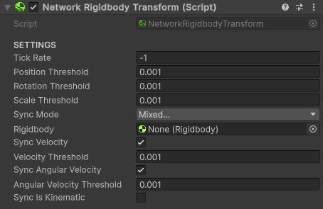
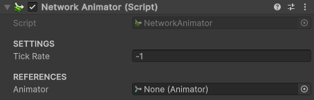

Components
The image below presents a scheme with the main network components of NetBuff:

To develop your project, it is necessary to first understand the main functionalities of each part of the system. In the sections below, you can find information about each of the basic components.
Network Manager
The NetworkManager component is the main component of the system, responsible for controlling the state of objects, packet delivery, and data synchronization between clients and the server, as well as controlling the initialization of network parts.

Network Manager GUI
The NetworkManagerGUI component is created to facilitate initial system testing. It creates a user interface with basic controls as well as statistics about the current connection. It can plot graphs into the screen showing FPS, latency and packet incoming/outgoing rates.

Warning
Using this component in a production environment is not recommended.
Network Identity
The NetworkIdentity component is used for the system to maintain references to objects in all network environments, that is, for the system to synchronize an object even on different machines. Every synchronized object needs to have a NetworkIdentity. In the inspector, the NetworkId of the identity is displayed, which is internally composed of 2 Int16 (totaling 32 bits), displayed as a string of 16 hexadecimal characters.

Ownership
Each NetworkIdentity is owned by some part of the network. The NetworkIdentity.OwnerId property stores the information about who is the current owner of the object, indicating the id of the client that has control over the object's state. By default, the value of NetworkIdentity.OwnerId is -1, indicating that the object is owned by the server. You can use the NetworkIdentity.IsOwnedByClient property to check if the object is owned by a client or not.
The NetworkIdentity.HasAuthority property is used to check if the local environment (whether client, server, or host) has authority to modify the object in question, where some actions such as activating/deactivating or even changing the owner of the object require authority.
1 2 3 4 5 6 |
|
Tip
Before performing any action on an object, remember to check the authority. In the case of a PlayerController, for example, only the owner of the object should have control over it.
Warning
When a client disconnects from the server, all objects controlled by it (NetworkIdentity.GetNetworkObjectsOwnedBy) are automatically despawned. You can use the NetworkBehaviour.OnClientDisconnected callback on the server to change the ownership of the object to avoid them being destroyed:
1 2 3 4 5 |
|
Finding Objects
There are several ways to locate a NetworkIdentity, the main one being using the NetworkId through the NetworkIdentity.GetNetworkObject method. It is also possible to use the NetworkIdentity.GetNetworkObjectsOwnedBy method to find all objects owned by a certain client, or the NetworkIdentity.GetNetworkObjects method to return all registered NetworkIdentity objects.
Tip
Calling the NetworkIdentity.GetNetworkObjectsOwnedBy method with ownerId = -1, it is possible to find all objects owned by the server.
Spawning Objects
You can spawn NetworkIdentity objects using the NetworkIdentity.Spawn method using the prefab. At the time of spawn, it is also possible to configure the object in various ways:
1
|
|
You can check which prefab was used to spawn an object by accessing the NetworkIdentity.PrefabId property. If an object was created in real-time, this value will be different from NetworkId.Empty. Pre-existing objects (created in the editor), even if they originated from a registered prefab, will not have a reference to the prefab.
Tip
When you spawn an object, you can choose who will own the object. If the field is omitted, the default value is -1, meaning the ownership of the NetworkIdentity will be of the server.
Tip
When you spawn an object, you can choose in which scene the object will appear. If the field is omitted, the default value is -1, meaning the object will go to the last loaded scene. See the Scene Management section for more information.
Warning
Remember to register your prefabs in the NetworkPrefabRegistry, otherwise, the system will not be able to spawn objects remotely. If the prefab is not registered, an error will occur. You can use the editor tool located in the NetBuff/Check Prefab Registries menu to check if there is any problem with your NetworkPrefabRegistry.
Despawning Objects
To despawn an object, simply use the NetworkIdentity.Despawn method. It is only possible to remove an object if the local server/client has authority over the object. If necessary, the server can use the NetworkIdentity.ForceSetOwner method first to gain permission to despawn the object.
1 2 |
|
Activating / Deactivating Objects
During an object's existence, it's also possible to change its activation state using the method NetworkIdentity.SetActive. Changing an object's activation state is only possible if the local server/client has authority over the object. If necessary, the server can use the method NetworkIdentity.ForceSetOwner beforehand to gain permission to despawn the object.
1 2 |
|
Network Prefab Registry
For NetBuff to be able to spawn objects over the network, it's necessary to maintain references to prefabs between clients and the server. Therefore, all prefabs that will be used to spawn objects in real-time (players, enemies, projectiles, etc.) must be registered in a NetworkPrefabRegistry, which should be referenced in the NetworkManager. Through the NetworkManager.PrefabRegistry property, you can reference which NetworkPrefabRegistry is being used.

Tip
You can use the editor tool located in the NetBuff/Check Prefab Registries menu to check if there are any issues with your NetworkPrefabRegistry.
Network Behaviour
The NetworkBehaviour component serves as the basis for all other network components that are attached to a NetworkIdentity. They are primarily responsible for synchronizing an object's state and handling/controlling its behaviors. Unlike normal MonoBehaviours, they cannot be added/removed in real-time. Much of the logic in a project created using NetBuff will be contained in components implemented using NetworkBehaviour as a base.

Tip
All properties and methods of the NetworkIdentity class have an interface in the NetworkBehaviour class to facilitate development.
1 2 3 4 5 6 7 8 9 10 11 |
|
Some NetworkBehaviour are already implemented by default:
Network Transform
The NetworkTransform component is used to synchronize the state of a transform over the network. You can set the update rate and which components will be updated, reducing the required data transfer rate.

Warning
Changing which fields will be synchronized (i.e., NetworkTransform.SyncModeMask) should not be done in real-time.
Network Rigidbody Transform
The NetworkRigidbodyTransform component functions similarly to the NetworkTransform component but also synchronizes the object's velocity, angular velocity, and the Rigidbody.IsKinematic property, improving the synchronization of physics-enabled objects.

Warning
Changing which fields will be synchronized (i.e., NetworkTransform.SyncModeMask) should not be done in real-time.
Network Animator
The NetworkAnimator component is used to synchronize the state of an Animator, including its parameters, layer weights, and animation/transition times.

Warning
Due to the functioning of the Animator.SetTrigger function, automatic synchronization is not possible. Use the NetworkAnimator.SetTrigger method to properly synchronize the state.
Network Value
The simplest way to customize the states of a NetworkBehaviour is by using a NetworkValue attached to it:
Tip
All NetworkValues have a yellow name in the inspector to make differentiation easier.
Tip
For testing purposes, you can change the value of any NetworkValue through the inspector, even without having authority.
1 2 3 4 5 6 7 8 9 10 11 12 13 14 15 16 17 18 19 20 21 22 23 |
|
Supported Types
Below is a list of all supported types of NetworkValue by default:
- Bool
- Byte
- Int
- Float
- Double
- Long
- Short
- String
- Vector2
- Vector3
- Vector4
- Quaternion
- Color
- Color32
- NetworkId
Custom Type Support
If necessary, you can implement your own NetworkValue. In the following example, we can see the implementation of a FloatArrayNetworkValue:
1 2 3 4 5 6 7 8 9 10 11 12 13 14 15 16 17 18 19 20 21 22 23 24 |
|
Listening For Changes
To facilitate, the NetworkValue<T> class has the OnValueChanged callback, which is called when the value of the NetworkValue changes (locally or externally), which is useful for creating reactive systems, such as a point counter on the screen that should update whenever the number of points changes.
1 2 3 4 5 6 7 8 9 10 11 12 13 14 15 |
|
Modifier Type
Each NetworkValue can have its own modification permissions, regardless of the ownership of the NetworkIdentity of the object.
1 2 3 4 5 |
|
Warning
Do not change the modification permissions of a variable in real-time. If necessary, set it to ModifierType.Everybody.